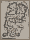
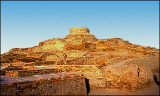

The CitadelAt the western end of the site is an area known as the Citadel. This area of the city was built on top of a mound of bricks almost 12 metres high. A large staircase ran up the side of this mound. 
The Citadel mound at Mohenjo-daro Several large buildings and structures on the Citadel mound suggest that this area may have been used for public gatherings, religious activities or important administrative activities. Small buildings which were probably homes do exist on the Citadel mound, however, they are not common. In the second century B.C. a stupa was built on the top of this mound. Archaeologists have found several large platforms and foundations made out of brick. Column bases and shallow holes still exist in the platforms, suggesting that they were meant to hold wooden columns or supports. However, the walls of these buildings do not survive. Since brick walls usually do survive, many archaeologists now believe that some large buildings at Mohenjo-daro were probably built out of wood. |